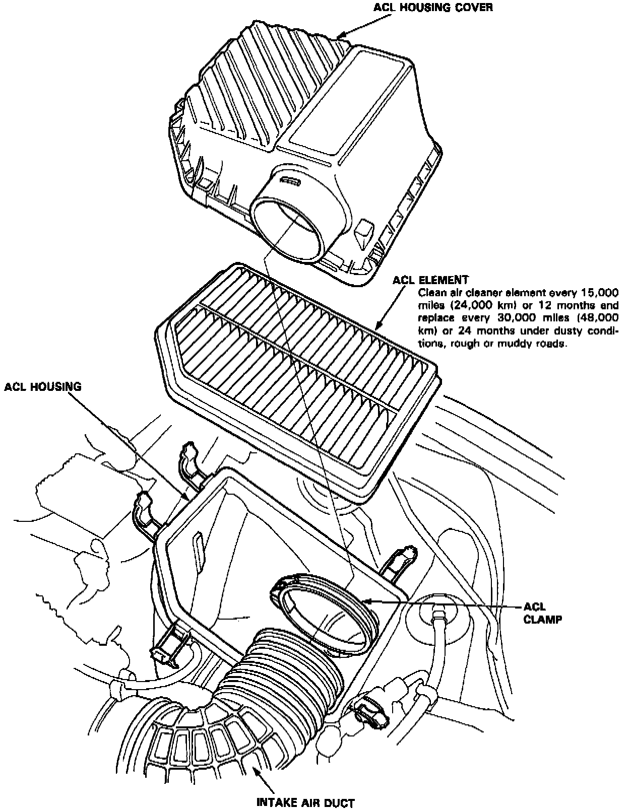

Operation CHARM
: Car repair manuals for everyone.
Home
>>
Acura
>>
1994
>>
Vigor L5-2451cc 2.5L SOHC G25A4 FI
>>
Repair and Diagnosis
>>
Powertrain Management
>>
Tune-up and Engine Performance Checks
>>
Air Cleaner Housing
>>
Air Filter Element
>>
Service and Repair
Air Filter Element: Service and Repair

Air cleaner element replacement.